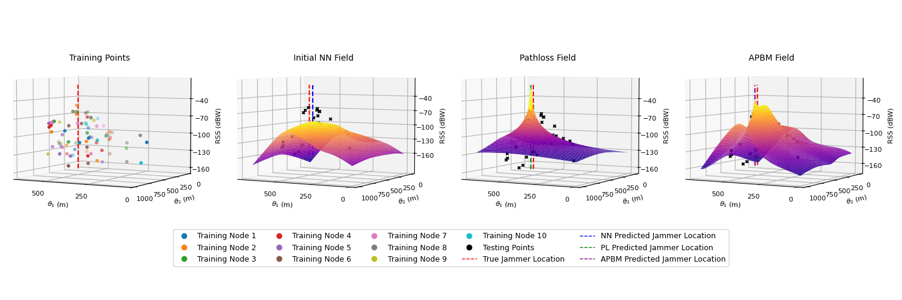

About Me
Hello! I'm a Ph.D. student in Computer Engineering at Northeastern University, advised by Prof. Pau Closas.
My research focuses on statistical machine learning together with federated learning to develop privacy-preserving, uncertainty-aware, and personalized models across heterogeneous clients, with current work on personalization through clustered federated learning. I also apply these methods to interference localization in GNSS.
I hold dual Bachelor’s degrees in Mathematics and Computer Science from CFIS, a selective high-performance program at the Polytechnic University of Catalonia (UPC), where I built a strong foundation in probability theory, statistical modeling, optimization, and deep learning.
Announcements
Sep. 2025: Submitted three papers to ICASSP 2026.Jun. 2025: Attended the Y Combinator Startup School event in San Francisco.
Apr. 2025: I am presenting my work "Jammer Source Localization with Federated Learning" at the IEEE/ION Position, Location and Navigation Symposium (PLANS) in Salt Lake City, Utah.
Mar. 2025: Selected among the Top 10 Computer Science students under 25 in Spain by Nova Talent.
Nov. 2024: Awarded Best Bachelor's Thesis Prize out of 300+ students at the Faculty of Informatics of Barcelona (FIB), UPC.
Sep. 2024: I have started my Ph.D. journey in Computer Engineering at Northeastern University, advised by Prof. Pau Closas. My M.S. concentration is in Computer Vision, Machine Learning, and Algorithms.
Papers
Preprints
DPMM-CFL: Clustered Federated Learning via Dirichlet Process Mixture Model Nonparametric Clustering
Under review, submitted to IEEE International Conference on Acoustics, Speech, and Signal Processing (ICASSP), 2026.
Bayesian Jammer Localization using Log-linear Mixture of Experts with CNN and Pathloss Models
Under review, submitted to IEEE International Conference on Acoustics, Speech, and Signal Processing (ICASSP), 2026.
Active Jammer Localization via Acquisition-Aware Path Planning
Under review, submitted to IEEE International Conference on Acoustics, Speech, and Signal Processing (ICASSP), 2026.
Trends and Challenges in Next-Generation GNSS Interference Management
Under review, submitted to IEEE Aerospace and Electronic Systems Magazine, 2025.
Publications
Jammer Source Localization with Federated Learning
IEEE/ION Position, Location and Navigation Symposium (PLANS), 2025. [Oral Presentation; Best Paper nominee]
[full paper]
[conference]
[code]
Research
Clustered Federated Learning (CFL) with Unknown Number of Clusters
- Addresses client heterogeneity in federated learning via Bayesian nonparametric clustering.
- Uses a Dirichlet Process Mixture Model (DPMM) to dynamically infer the number of clusters while training.
- Employs restricted Gibbs sampling with split–merge proposals and weighted aggregation.
- Achieves scalable personalization without fixing the number of clusters K in advance.
CFL DPMM Split–Merge MCMC
Bayesian, Federated, and Active Learning Approaches for Jammer Localization
- Develops ML models for privacy-preserving GNSS jammer localization in crowdsourced environments.
- APBM: Differentiable pathloss model + neural network, trained with FedAvg for decentralized optimization.
- Bayesian mixtures of models: Pathloss expert combined with CNN to capture contextual effects and quantify uncertainty.
- Active learning: Used to guide data collection toward the most informative regions.
- Improves localization accuracy and robustness in complex multipath-affected urban settings.

Predicted jammer field and source localization in an urban scenario using the Augmented Physics-Based Model (APBM).
APBM CNN FedAvg Bayesian Mixtures Active Learning
Internships
-
ML & GNSS Engineer Intern, Albora Technologies, Barcelona, Spain (Summer 2024)
- Developed a robust outlier detection algorithm for RTK GNSS positioning using Kalman filtering and RTKLIB, improving smartphone navigation accuracy using the Google Smartphone Decimeter Challenge dataset.
- Contributed to the European Union’s NEUROPULS initiative focused on neuromorphic technology for jammer classification.
-
Data Analyst & Software Developer Intern, Indaru, Barcelona, Spain (Summers 2022 & 2023)
- Designed a data-driven marketing mix modeling optimization dashboard using R and Shiny.
-
Web Developer Intern, Wikiloc Outdoor Navigation, Girona, Spain (Summer 2021)
- Developed backend modules for personalized static maps using NodeJS and VueJS.
Awards
- Top 10 Under 25 Computer Science Awardee, Nova Talent, Spain (2025)
- Best Bachelor's Thesis Prize, Faculty of Informatics of Barcelona, UPC (2024) — out of 300+ students
- CFIS Fellowship Recipient, Polytechnic University of Catalonia (2019)
- Top 6 Ranking (9.7/10) in Catalan University Entrance Exams (2019) — out of 30,000 students